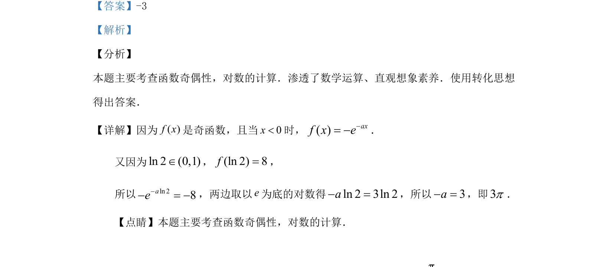

考点：函数奇偶性 对数运算 转化思想
考查函数奇偶性与对数运算，利用奇函数性质转化求参数值。

📄 原 PDF 第 10 页：
素材/真题/吉林/2008-2024·（吉林）数学高考真题/2019年高考数学试卷（理）（新课标Ⅱ）（解析卷）.pdf
14.已知( )f x是奇函数，且当0x<时，( ) eaxf x= −.若(ln 2) 8f=，则a=___ _.
【答案】-3 【解析】 【分析】 本题主要考查函数奇偶性，对数的计算．渗透了数学运算、直观想象素养．使用转化思想 得出答案． 【详解】因为( )f x是奇函数，且当0x<时，( )axf x e−= −． 又因为ln 2 (0,1)Î，(ln 2) 8f=， 所以ln 28ae−− = −，两边取以e为底的对数得ln 2 3ln 2a− =，所以3a−=，即3p． 【点睛】本题主要考查函数奇偶性，对数的计算．